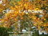

Ces exercices permettent d'acquérir des pré-requis indispensables pour l'apprentissage de la lecture.
Il s'agit d'exercices permettant de travailler l'écoute, les repères spatiaux, le sens du déplacement de la lecture, d'enrichir le vocabulaire.
Quand vous "lancez l'application", les exercices en ligne s'ouvrent dans une nouvelle fenêtre. Si elle ne s'ouvre pas c'est qu'un pare-feu est activé. Vous devez alors autoriser l'ouverture de la nouvelle fenêtre en cliquant sur la barre qui s'affiche en haut de votre navigateur.
NOUVEAU
Les positions : Lancer l'application
Des exercices pour apprendre les premières notions spatiales : dans, à côté, sur - sous,
en haut - en bas.
Un imagier sonore : Lancer l'application
Pour des petits ou des enfants présentant des troubles neuro-visuels avec utilisation d'un écran tactile lorsque le pointeur de la souris n'est pas perçu ou la coordination occulo-manuelle pas maîtrisée:
- poser son regard, pointer/cliquer, écouter
- reconnaître et relier deux images identiques
- écouter et retrouver l'image nommée
- sélectionner les images d'une même catégorie
Ecouter et reconnaître les bruits : Lancer l'application
Exercer sa perception auditive avec les bruits d'animaux, de véhicules, d'objets de la maison.
Apprendre les voyelles :  Lancer l'application
Lancer l'application
L'utilisation des gestes de la méthode Borel Maisonny en complément d'une imprégnation
visuelle et auditive des voyelles. L'objectif est de reconnaître la graphie et le "son" de la lettre dans les mots.
C'est la rentrée : Télécharger
Télécharger  - Lancer l'application
- Lancer l'application
Exercices de tri, rangement, tableau à double entrée, écoute attentive...
C'est l'automne :  Télécharger - Lancer l'application
Exercices : tableau à double entrée, écoute attentive, trajet...
La photo : "Forêt au petit matin" est de Patricia NEY sur le site : http://www.fond-ecran-image.com/galerie-membre/photo-foret.html
C'est Noël : Télécharger - Lancer l'application
Télécharger - Lancer l'application
Exercices d'organisation et de repères dans l'espace.
La galette : Lancer l'application
Lancer l'application
Dans la cuisine :Télécharger- Lancer l'application
Apprendre le vocabulaire des ustensiles de cuisine.
C'est l'hiver :  Télécharger- Lancer l'application
Télécharger- Lancer l'application
Consignes sonorisées, exercices de repérage dans un tableau à double entrée, coloriages...
Les couleurs : Télécharger- Lancer l'application
Apprendre les couleurs : une application réalisée par JM Marcos Rodrigo traduite en français pour le nom des couleurs.
Les crêpes :  Télécharger- Lancer l'application
Télécharger- Lancer l'application
Ecoute, compréhension, vocabulaire, copie de mots...
Les fleurs :  Télécharger- Lancer l'application
Télécharger- Lancer l'application
Observer, s'organiser dans l'espace, mémoriser, les couleurs... avec les fleurs du printemps